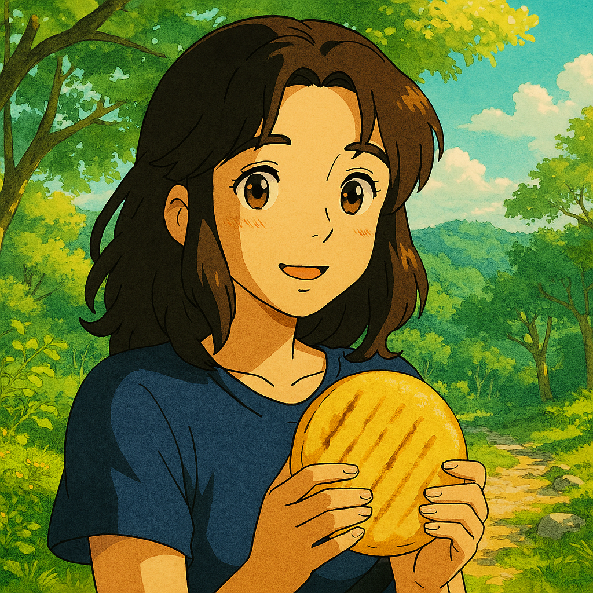
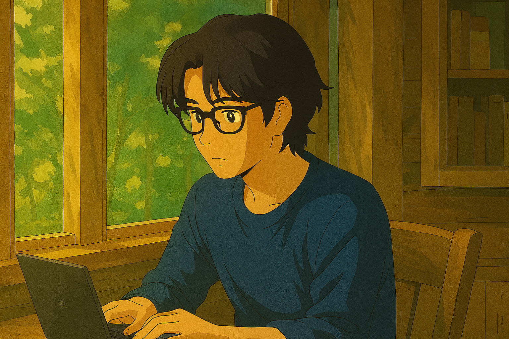

🌽 Blog 1: Arepa – The Heart of Colombia
Arepa is Colombia’s comfort food—warm, simple, and full of soul. Whether grilled, fried, or stuffed, it brings people together across regions and generations. It’s more than cornmeal—it’s tradition, pride, and a taste of home.

💻 Blog 2: Web Development – Build Your Future
With just a laptop and creativity, web developers shape the digital world. From websites to apps, they turn ideas into income and freedom. Learn to code, solve problems, and create a career that grows with you.

🎓 Blog 3: Education – Power to Transform
Education unlocks potential and breaks down walls. It’s the key to opportunity, confidence, and change. When you learn deeply and think boldly, you don’t just grow—you help shape a better world.